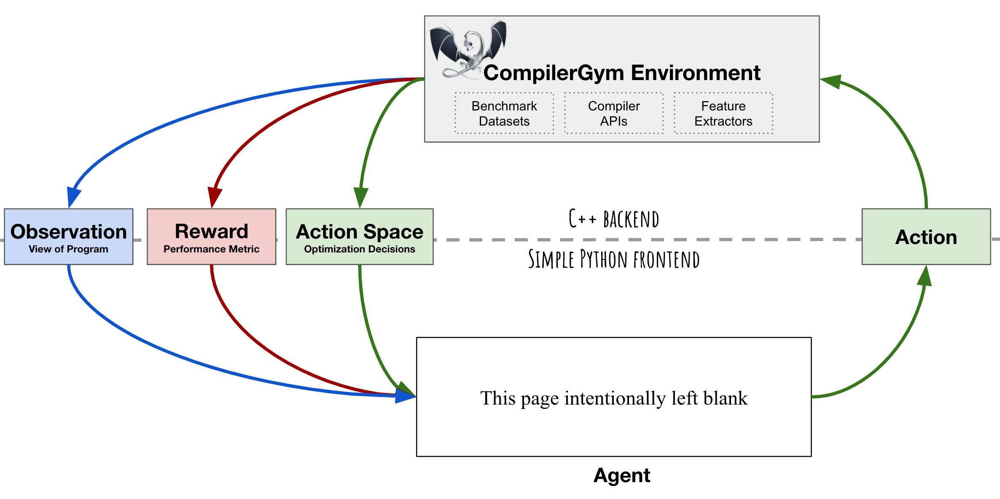

Getting Started¶
CompilerGym is a toolkit for applying reinforcement learning to compiler optimization tasks. This document provides a short walkthrough of the key concepts, using the codesize reduction task of a production-grade compiler as an example. It will take about 20 minutes to work through. Lets get started!
Topics covered:
Key Concepts¶
CompilerGym exposes compiler optimization problems as environments for reinforcement learning. It uses the OpenAI Gym interface to expose the “agent-environment loop” of reinforcement learning:
The ingredients for reinforcement learning that CompilerGym provides are:
Environment: a compiler optimization task. For example, optimizing a C++ graph-traversal program for codesize using LLVM. The environment encapsulates an instance of a compiler and a particular program that is being compiled. As an agent interacts with the environment, the state of the program, and the compiler, can change.
Action Space: the actions that may be taken at the current environment state. For example, this could be a set of optimization transformations that the compiler can apply to the program.
Observation: a view of the current environment state. For example, this could be the Intermediate Representation (IR) of the program that is being compiled. The types of observations that are available depend on the compiler.
Reward: a metric indicating the quality of the previous action. For example, for a codesize optimization task this could be the change to the number of instructions of the previous action.
A single instance of this “agent-environment loop” represents the compilation of a particular program. The goal is to develop an agent that maximises the cumulative reward from these environments so as to produce the best programs.
Installation¶
Install the latest CompilerGym release using:
$ pip install compiler_gym
The binary works on macOS and Linux (on Ubuntu 18.04, Fedora 28, Debian 10 or newer equivalents).
Building from Source¶
If you prefer, you may build from source. This requires a modern C++ toolchain. On macOS you can use the system compiler. On linux, install the required toolchain using:
$ sudo apt install clang libtinfo5 patchelf
$ export CC=clang
$ export CXX=clang++
We recommend using conda to manage the remaining build dependencies. First create a conda environment with the required dependencies:
$ conda create -n compiler_gym python=3.8 bazel=3.1.0 cmake pandoc
$ conda activate compiler_gym
Then clone the CompilerGym source code using:
$ git clone https://github.com/facebookresearch/CompilerGym.git
$ cd CompilerGym
Install the python development dependencies using:
$ make init
Then run the test suite to confirm that everything is working:
$ make test
To build and install the python package, run:
$ make install
NOTE: To use the python code that is installed by make install
you must leave the root directory of this repository. Attempting to
import compiler_gym while in the root of this repository will cause
import errors.
When you are finished, you can deactivate and delete the conda environment using:
$ conda deactivate
$ conda env remove -n compiler_gym
Using CompilerGym¶
Begin by firing up a python interpreter:
$ python
To start with we import the gym module and the CompilerGym environments:
>>> import gym
>>> import compiler_gym
Importing compiler_gym automatically registers the compiler environments.
We can see what environments are available using:
>>> compiler_gym.COMPILER_GYM_ENVS
['llvm-v0', 'llvm-ic-v0', 'llvm-autophase-ic-v0', 'llvm-ir-ic-v0']
Selecting an environment¶
CompilerGym environments are named using one of the following formats:
<compiler>-<observation>-<reward>-<version><compiler>-<reward>-<version><compiler>-<version>
Where <compiler> identifiers the compiler optimization task,
<observation> is the default type of observations that are provided,
and <reward> is the reward signal.
Note
A key concept is that
CompilerGym environments enables lazy evaluation of observations and
reward signals. This makes the environment much more computationally
efficient for scenarios in which you do not need to compute a reward or
observation for every step. If an environment omits a <observation>
or <reward> tag, this means that no observation or reward is
provided by default. See compiler_gym.views for
further details.
For this tutorial, we will use the following environment:
Compiler: LLVM.
Observation Type: Autophase.
Reward Signal: IR Instruction count relative to -Oz.
Create an instance of this environment using:
>>> env = gym.make("llvm-autophase-ic-v0")
Installing benchmarks¶
A compiler requires a program as input. For the purposes of CompilerGym we call these input programs benchmarks, and collections of benchmarks are assembled into datasets. You may provide your own programs to use as benchmarks, or download one of our pre-assembled datasets.
The benchmarks that are available to an environment can be queried using
env.benchmarks:
>>> env.benchmarks
[]
As you can see, there are no benchmarks installed by default. We have provided
a collection of pre-assembled
LLVM benchmark datasets that can be
installed using
env.require_dataset().
For this tutorial we will use the
NAS Parallel Benchmarks
dataset:
>>> env.require_dataset("npb-v0")
Now, env.benchmarks lists
the 123 benchmarks that comprise the dataset we just installed:
>>> env.benchmarks
['benchmark://npb-v0/46', 'benchmark://npb-v0/17', ...]
The compiler environment¶
If you have experience using OpenAI Gym, the
CompilerGym environments will be familiar. If not, you can call help()
on any function, object, or method to query the documentation:
>>> help(env)
The action space is described by
env.action_space.
The LLVM Action Space is discrete:
>>> env.action_space.dtype
dtype('int64')
>>> env.action_space.n
138
The observation space is described by
env.observation_space.
The Autophase observation space is a 56-dimension
vector of integers:
>>> env.observation_space.space.shape
(56,)
>>> env.observation_space.space.dtype
dtype('int64')
The upper and lower bounds of the reward signal are described by
env.reward_range:
>>> env.reward_range
(0.0, inf)
As with other Gym environments,
reset()
must be called before a CompilerGym environment may be used:
>>> env.reset()
array([ 0, 0, 399, 381, 10, 399, 147, 8, 137, 147, 0,
0, 0, 556, 0, 546, 0, 15, 693, 574, 1214, 1180,
384, 399, 214, 0, 120, 116, 0, 88, 468, 8, 546,
16, 1073, 147, 0, 1551, 0, 0, 0, 10, 766, 0,
0, 505, 46, 0, 0, 0, 556, 5075, 3261, 13, 0,
2441])
The numpy array that is returned here is the initial
Autophase observation. Calling
env.reset() starts an
instance of the compiler and selects a random benchmark to use. You can see
which benchmark is currently being used by an environment using
env.benchmark:
>>> env.benchmark
'benchmark://npb-v0/90'
If we want to force the environment to use a specific benchmark, we can pass the
name of the benchmark as an argument to
env.reset():
>>> env.reset(benchmark="benchmark://npb-v0/50")
array([ 0, 0, 26, 25, 1, 26, 10, 1, 8, 10, 0,
0, 0, 37, 0, 36, 0, 2, 46, 175, 1664, 1212,
263, 26, 193, 0, 59, 6, 0, 3, 32, 0, 36,
10, 1058, 10, 0, 840, 0, 0, 0, 1, 416, 0,
0, 148, 60, 0, 0, 0, 37, 3008, 2062, 9, 0,
1262])
Interacting with the environment¶
Once an environment has been initialized, you interact with it in the same way
that you would with any other OpenAI Gym
environment. env.render() prints
the Intermediate Representation (IR) of the program in the current state:
>>> env.render()
; ModuleID = 'benchmark://npb-v0/83'
target datalayout = "e-m:e-p270:32:32-p271:32:32-p272:64:64-i64:64-f80:128-n8:16:32:64-S128"
target triple = "x86_64-pc-linux-gnu"
...
env.step() runs an action:
>>> observation, reward, done, info = env.step(0)
This returns four values: a new observation, a reward, a boolean value indicating whether the episode has ended, and a dictionary of additional information:
>>> observation
array([ 0, 0, 26, 25, 1, 26, 10, 1, 8, 10, 0,
0, 0, 37, 0, 36, 0, 2, 46, 175, 1664, 1212,
263, 26, 193, 0, 59, 6, 0, 3, 32, 0, 36,
10, 1058, 10, 0, 840, 0, 0, 0, 1, 416, 0,
0, 148, 60, 0, 0, 0, 37, 3008, 2062, 9, 0,
1262])
>>> reward
0.3151595744680851
>>> done
False
>>> info
{'action_had_no_effect': True, 'new_action_space': False}
For this environment, reward represents the reduction in code size of the
previous action, scaled to the total codesize reduction achieved with LLVM’s
-Oz optimizations enabled. A cumulative reward greater than one means
that the sequence of optimizations performed yields better results than LLVM’s
default optimizations. Let’s run 100 random actions and see how close we can
get:
>>> env.reset(benchmark="benchmark://npb-v0/50")
>>> episode_reward = 0
>>> for i in range(1, 101):
... observation, reward, done, info = env.step(env.action_space.sample())
... if done:
... break
... episode_reward += reward
... print(f"Step {i}, quality={episode_reward:.3%}")
...
Step 1, quality=44.299%
Step 2, quality=44.299%
Step 3, quality=44.299%
Step 4, quality=44.299%
Step 5, quality=44.299%
Step 6, quality=54.671%
Step 7, quality=54.671%
Step 8, quality=54.608%
Step 9, quality=54.608%
Step 10, quality=54.608%
Step 11, quality=54.608%
Step 12, quality=54.766%
Step 13, quality=54.766%
Step 14, quality=53.650%
Step 15, quality=53.650%
...
Step 97, quality=88.104%
Step 98, quality=88.104%
Step 99, quality=88.104%
Step 100, quality=88.104%
Not bad, but clearly there is room for improvement! Because at each step we are taking random actions, your results will differ with every run. Try running it again. Was the result better or worse? Of course, there may be better ways of selecting actions than choosing randomly, but for the purpose of this tutorial we will leave that as an exercise for the reader :)
Before we finish, lets use
env.commandline()
to produce an LLVM opt command line invocation that is equivalent to
the sequence of actions we just run:
>>> env.commandline()
'opt -consthoist -sancov -inferattrs ... -place-safepoints input.bc -o output.bc'
We can also save the program for future reference:
>>> env.write_bitcode("~/program.bc")
Once we are finished, we must close the environment to end the compiler instance:
>>> env.close()
And finally we are done with our python session:
>>> exit()
Using the command line tools¶
CompilerGym includes a set of useful command line tools. Each of the steps above could be replicated from the command line.
For example, compiler_gym.bin.service can be used to list the available
environments:
$ python -m compiler_gym.bin.service --ls_env
llvm-v0
...
And to describe the capabilities of each environment:
$ python -m compiler_gym.bin.service --env=llvm-v0
# CompilerGym Service `/path/to/compiler_gym/envs/llvm/service/compiler_gym-llvm-service`
## Programs
+------------------------+
| Benchmark |
+========================+
| benchmark://npb-v0/1 |
+------------------------+
...
## Action Spaces
### `PassesAll` (Commandline)
+---------------------------------------+-----------------------------------+-------------------------------+
| Action | Flag | Description |
+=======================================+===================================+===============================+
| AddDiscriminatorsPass | `-add-discriminators` | Add DWARF path discriminators |
+---------------------------------------+-----------------------------------+-------------------------------+
...
The compiler_gym.bin.manual_env module provides a thin text user
interface around the environment for interactive sessions:
$ python -m compiler_gym.bin.manual_env --env=llvm-autophase-ic-v0 --benchmark=npb-v0/50
Initialized environment in 264.9ms
Reset benchmark://npb-v0/50 environment in 27.6ms
Observation: [ 0 0 11 10 1 11 5 1 3 5 0 0 0 17 0 16 0 2
21 20 50 44 18 11 6 0 3 10 0 1 16 0 16 2 40 5
0 59 0 0 0 1 30 0 0 18 0 0 0 0 17 193 129 4
0 99]
Finally, the compiler_gym.bin.random_search module provides a simple
but powerful strategy for randomly searching the optimization space:
$ python -m compiler_gym.bin.random_search --env=llvm-autophase-ic-v0 --benchmark=npb-v0/50 --runtime=10
Started 16 worker threads for benchmark://npb-v0/50 (3,008 instructions) using reward IrInstructionCountOz.
Writing logs to /home/user/logs/compiler_gym/random/npb-v0/50/2020-12-03T17:24:17.304887
=== Running for 10 seconds ===
Runtime: 10 seconds. Num steps: 32,287 (3,206 / sec). Num episodes: 285 (28 / sec). Num restarts: 0.
Best reward: 107.85% (69 passes, found after 9 seconds)
Ending worker threads ... done
Replaying actions from best solution found:
Step [000 / 069]: reward=31.52%
Step [001 / 069]: reward=31.52%, change=0.00%, action=SlpvectorizerPass
Step [002 / 069]: reward=37.09%, change=5.57%, action=Sroapass
...
Step [067 / 069]: reward=107.60%, change=0.00%, action=InductiveRangeCheckEliminationPass
Step [068 / 069]: reward=107.60%, change=0.00%, action=LoopDeletionPass
Step [069 / 069]: reward=107.85%, change=0.24%, action=Gvnpass
To beat the compiler by 7.85% after 10 seconds of random trials is not bad going!